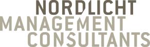
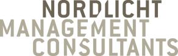

Lehrer müssen eine Vorbildfunktion im Umgang mit digitalen Medien einnehmen.
Diesen Prozess möchten wir begleiten.
Ein zusammenschluss aus Projekten von:


Das Problem
Digitalisierung hat unseren Alltag - privat wie in der Wirtschaft - grundlegend erleichtert. Für viele Lehrer:innen bedeutete Digitalisierung aber in den letzten Monaten vor allem eines: Unsicherheit und Stress.
Schulen wird zwar der Zugang technische Entwicklungen zur Verfügung gestellt, doch oft fehlen die Grundlagen diese sinnvoll einzusetzen. Die riesige Vielfalt an Angeboten und technischen Möglichkeiten überfordert. Das führt dazu, dass die Schere zwischen den Motivierten und denjenigen denen die Grundlagen fehlen, immer weiter auseinander geht. Diese Situation blockiert notwendige Entwicklungsprozesse.
Für einen nachhaltigen Schulentwicklungsprozess müssen digitale Kompetenzen jetzt aufgeholt und weiterentwickelt werden!
Unsere Partner über das Umsetzungprogramm WirvsVirus Solution Enabler

 


Wir möchten diesen Prozess nachhaltig anstoßen!
Drei Hackathon-Projekte

Mikro-Snacks
Hackathon: Wir für Schule (Juni 2020) Finalisten-Projekt
Das Projekt Mikro-Snacks - mit kleinen Schritten zur Digitalisierung entwickelt eine Reihe an Mikro-Workshops, die den Einstieg in das digitale Unterrichten erleichtern sollen. Entstehen soll dabei ein Methodenkoffer mit kurzen Mikro-Snacks für ein ganzes Schuljahr, die einfach in den Schulalltag zu integrieren sind. Im Methodenkoffer sind Materialien für kurze 15 minütige Mikro-Snacks enthalten, die motivierte Lehrer:innen befähigen digitale Themen im gesamten Kollegium anzusprechen.
zur Projekt-Seite
EDUmentoring
Hackathon: WirvsVirus (März 2020) Projekt des WirvsVirus-SolutionEnabler
EDUmentoring hilft Lehrer:innen schnell und praxisorientiert digital zu unterricht. Das digitale Fortbildungsangebot hilft dabei Medienkompetenz aufzuholen, die richtige Technik auszuwählen sowie einzusetzen und didaktisches Neuland zu erschließen. Mit gefestigten digitalen Grundlagen und Ideen für den gewinnbringenden Einsatz digitaler Elemente im Unterricht kann die Digitalisierung an Schulen einen gewaltigen Schritt vorangebracht werden.
zur Projekt-SeiteDas Virtuelle Klassenzimmer
Hackathon: WirvsVirus (März 2020) Projekt des WirvsVirus-SolutionEnabler
Das virtuelle Klassenzimmer bietet die Möglichkeit, Lehrer:innen persönlich durch den Digitalisierungsprozess zu begleiten. Mithilfe persönlicher Beratungstermine und gemeinsam entwickelter Strategien können individuelle Lösungen gefunden werden, den persönlichen Unterrichtsstil in die digitale Welt zu übertragen.
zur Projekt-SeiteDiese Projekte möchten wir zusammenführen zu:
Was uns vereint:
Wir stärken Lehrer:innen Sicherheit in der digitalen Welt zu gewinnen.
Nur gemeinsam können wir den Schulentwicklungsprozess starten.
Motivieren
Mikro-Snacks stärkt die digital motivierten Lehrer:innen digitale Themen im Kollegium anzusprechen. Das Kollegium erlangt Überblickswissen und kann gezielt nach individuellen Lösungen suchen.
Inspirieren
EDUmentoring bietet die Möglichkeit einen Einstieg in den digitalen Unterricht zu finden. Grundlagendwissen kann vertieft werden und die Angst vor der digitalen Arbeit genommen werden.
Aktivieren
Aus “Das virtuelle Klassenzimmer” wird “Das digitale Lehrerzimmer”. Das Projekt schafft eine digitale und moderierte Austauschplattform für Lehrer:innen ihre digitalen Ideen weiterzuentwickeln und gemeinsam an ihren aktuellen Herausforderungen zu arbeiten.
Unterstützen Sie uns!
In den kommenden Wochen möchten wir unsere Angebote weiterentwickeln
und schnell zu einer Lösung für die akuten Probleme im
Bildungsbereich beitragen. - drei interdisziplinäre Teams, die
gemeinsam den Digitalisierungsprozess an Schulen vorantreiben wollen
- Vielseitigkeit: Lehrer:innen, Schüler:innen, Studierende sind
dabei genauso vertreten - Teammitglieder aus den Bereichen
Medienpsychologie, Medienpädagogik, Marketing, Vertrieb,
Betriebswirtschaft und Projektmanagement In einem nächsten Schritt
möchten wir alle drei Teams zu einem Gesamtprojekt zusammenschließen
und somit noch zielführender den gesamten Digitalisierungprozess
begleiten zu können. Dabei ist es uns ein großes Anliegen das
Projekt gemeinnützig mit externer Förderung weiter voranzutreiben.
Es hat sich aber auch gezeigt, dass die Organisationen dieses
enormen ehrenamtlichen Engagements, das ständige Validieren von
unseren Lösungsansätzen sowie intensive und umfangreiche Gespräche
mit Lehrer:innen einen hohen administrativen Aufwand darstellen. Um
den Prozess der Digitalisierung in Schulen auch langfristig
begleiten zu können, bedarf es hier Ihrer Unterstützung!